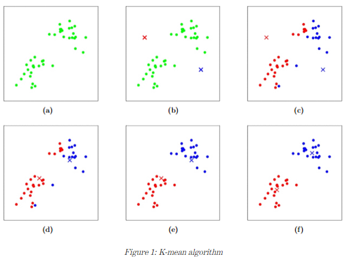

<section class="projects">
  <div class="container">
    <h2 class="title projects__title">TrainSet Academy</h2>

    <div class="cardSection">
      <div class="navigationSlider">
        <div class="navigationSlider__arrow swiper-button-prev"></div>

        <div class="navigationSlider__container swiper-container">
          <div class="navigationSlider__wrapper swiper-wrapper">
            <a href="#" class="navigationSlider__link swiper-slide active">Doks</a>
            <a href="#" class="navigationSlider__link swiper-slide">Blog</a>
            <a href="#" class="navigationSlider__link swiper-slide">Training</a>
          </div>
        </div>

        <div class="navigationSlider__arrow swiper-button-next"></div>
      </div>

      @@include("./_navUlListContetnt.html")

      <div class="paragraph cardSection__paragraph">
        <h6 class="paragraph__title paragraph__title_BG">1. Introduction</h6>

        <p class="paragraph__text">
          Labels are an essential ingredient to supervised algorithms like Support Vector Machines, which learns a hypothesis
          function to predict labels given features. K-means clustering is a type of unsupervised learning, which is used when you
          have unlabeled data (i.e., data without defined categories/groups/response variables).
        </p>
      </div>

      <div class="paragraph cardSection__paragraph">
        <h6 class="paragraph__title paragraph__title_BG">2. Key Terms</h6>

        <ul class="paragraph__text paragraph__list paragraph__list_dots-type">
          <li>
            <span class="paragraph__text_bold">CLuster:</span> is a collection of data points aggregated together because of
            certain similarities.
          </li>

          <li>
            <span class="paragraph__text_bold">CLuster Centroid</span> (or simply
            <span class="paragraph__text_bold">centroid</span>) is the mean of a cluster, its values are the coordinate-wise
            average of the data points in this cluster.
          </li>

          <li>
            <span class="paragraph__text_bold">Within-Cluster Varianceis</span> the coordinate-wise squared deviations from the
            cluster centroid of all the observations belonging to that cluster:
          </li>
        </ul>

        <p class="paragraph__text">
          In the expression above denotes j-th predictor of observation ; denotes a set of points belonging to cluster and denotes
          a centroid of cluster
        </p>

        <ul class="paragraph__text paragraph__list paragraph__list_dots-type">
          <li>Total Within-Cluster Varianceis a within-cluster variance summed up across all clusters:</li>
        </ul>

        <p class="paragraph__text">Note that the notation means the euclidean distance between vectors and</p>
      </div>

      <div class="paragraph cardSection__paragraph">
        <h6 class="paragraph__title paragraph__title_BG">3. Data Representation and Preparation</h6>

        <p class="paragraph__text">
          In the formulas above represents a vector in a P-dimensional space and P is a number of predictors in data set. As you
          can see from the formulas above, K-Means algorithm utilizes the notion of distance between data points and each data
          point weights equally. In order to calculate the distance, we need our data to be numerical. For this reason,
          categorical values should be handled (either excluded from the list of predictors or replaced with numerical values).
          Also, we need to normalize our data in order to avoid the effects of incomparable units and different scaling.
        </p>
      </div>

      <div class="paragraph cardSection__paragraph">
        <h6 class="paragraph__title paragraph__title_BG">4. Algorithm</h6>

        <p class="paragraph__text">
          K-Means algorithm finds cluster centers that minimize the total within-cluster variance . This is achieved in several
          steps:
        </p>

        <ul class="paragraph__text paragraph__list paragraph__list_dots-type">
          <li><span class="paragraph__text_bold">Step 1:</span> Randomly generate K centroids</li>
          <li><span class="paragraph__text_bold">Step 2:</span> Assign data points to the cluster of the closest centroid:</li>
          <li><span class="paragraph__text_bold">Step 3:</span> Compute the mean of each cluster</li>

          <li>
            <span class="paragraph__text_bold">Step 4:</span> Reassign centroids to respective clusters’ means computed in Step 3
          </li>

          <li><span class="paragraph__text_bold">Step 5:</span> If the stop criterion is not satisfied: Go to Step 2</li>
        </ul>

        <p class="paragraph__text"><span class="paragraph__text_bold">Stop criterion</span> can be one of the following:</p>

        <ol class="paragraph__text paragraph__list paragraph__list_bold-marker">
          <li>Cluster re-assignation results in same clusters</li>
          <li>A specified number of iterations is reached</li>
          <li>Reassigned centroids are located close (need to specify the distance) to the previous centroids</li>
        </ol>
        <p class="paragraph__text">
          In order to achieve <span class="paragraph__text_bold">global optima</span>, the algorithm should be run multiple times
          and clusters’ realization that is observed more often will be our global optima.
        </p>

        <p class="paragraph__text">
          Example: In Figure 1, you can see a K-means algorithm. Training examples are shown as dots, and cluster centroids (K)
          are shown as crosses. (a) is an original dataset. (b) is a random initial cluster centroids. (c-f) is an illustration of
          running two iterations of k-means. In each iteration, we assign each training example to the closest cluster centroid
          (shown by ”painting” the training examples the same color as the cluster centroid to which is assigned); then we move
          each cluster centroid to the mean of the points assigned to it.
        </p>

        <div class="nestedPicture cardSection__nestedPicture ">
          <div class="nestedPicture__image"></div>
        </div>

        <!-- for space bettween image and text -->
        <p class="paragraph__text"></p>

      </div>

      <div class="paragraph cardSection__paragraph">
        <h6 class="paragraph__title paragraph__title_BG">5. Choosing K</h6>

        <p class="paragraph__text">There are three most common ways of selecting the number of clusters K.</p>

        <ol class="paragraph__text paragraph__list paragraph__list_bold-marker">
          <li>
            Utilize our domain knowledge or any other insight about the data. For instance, we want to cluster flower and we know
            that our data contains exactly 3 types of flowers. Another example is when we want to cluster cars sold last year. In
            this case, K will be the number of all car manufacturers available on the market.
          </li>
          <li>
            Run the algorithms several times for different values of K and select such K that results in the smallest value of
            total within-cluster variance.
          </li>
          <li>Perform cross-validation and select such K that performs the best on a hold-out dataset.</li>
        </ol>
      </div>
    </div>

    @@include("./_fixedArrow.html")
  </div>
</section>
